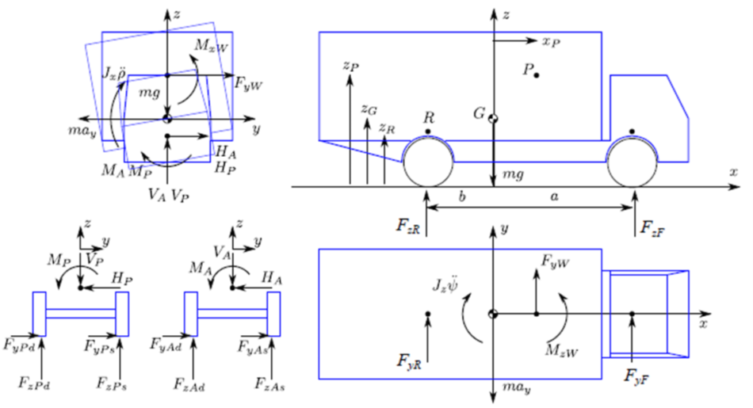
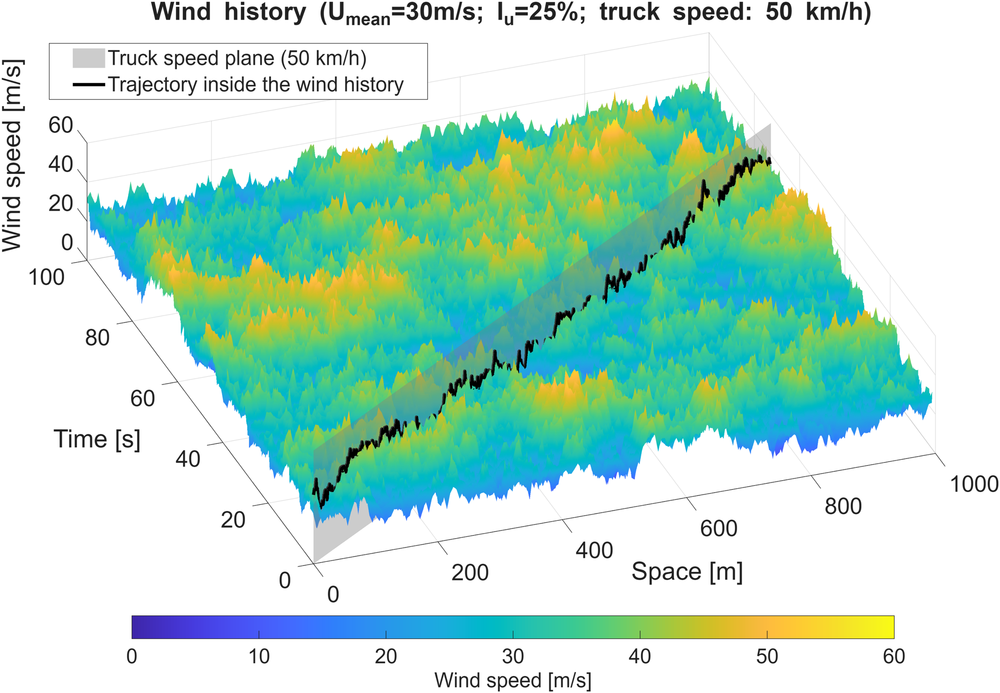

Wind Engineering · MATLAB · Multi-DOF Dynamics · Politecnico di Milano · A.A. 2024–2025
A multi-DOF dynamic simulation of a heavy vehicle under transient crosswind — combining quasi-steady aerodynamic loads with Pacejka tyre modelling to map rollover risk across road conditions, load configurations, and driving manoeuvres.
Overview
A heavy truck travelling at highway speed is a high-profile, top-heavy structure exposed to potentially severe lateral aerodynamic loads. When a strong crosswind gust hits, the resulting force and overturning moment can lift the windward wheels off the ground — leading to rollover. The conditions under which this happens depend on far more than wind speed alone.
This group project, developed in the Wind Engineering course at Politecnico di Milano, built a full MATLAB simulation combining time-varying wind histories, quasi-steady aerodynamic coefficients from 1:10 scale wind tunnel tests, and a multi-DOF vehicle model covering lateral, yaw, and roll dynamics. The goal was to map rollover risk across a wide parameter space and identify the configurations that maximise stability.
Heavy vehicle under transient crosswind — lateral force, roll and yaw moments
Model
Multi-DOF vehicle dynamics
Lateral motion, yaw, and roll equations of motion solved numerically. Tyre forces via Pacejka model with friction coefficient varying by road surface. Rollover onset detected by windward wheel unloading threshold.
Wind input
Stochastic wind histories
Six turbulent wind time-space histories at two mean speeds and three turbulence intensities. The vehicle sweeps each history as it advances, coupling its speed to the wind field it encounters.
Parametric study
Load ratio & roll stiffness
Systematic sweep of load ratio λ (centre-of-gravity height) and axle roll stiffness distribution τ_roll. A 2D optimisation identified the configuration maximising rollover resistance.
Manoeuvre
Lane change simulation
PD steering controller simulated single and double lane changes. The lateral trajectory was shown to generate angle-of-attack peaks that can reduce rollover speed significantly compared to straight-line travel.

Spatio-temporal wind field — the truck trajectory cuts through a stochastic gust landscape
Key findings
The most counterintuitive result concerned road surface: dry tarmac, with its high friction, actually produces lower rollover speeds than wet road, because the tyres act as a firmer pivot. On snow, rollover is rare — but uncontrolled lateral sideslip becomes the dominant hazard even at moderate speeds.
The load ratio showed a non-monotonic optimum: adding payload initially raises rollover resistance by increasing tyre normal forces and roll inertia, but beyond a threshold the rising centre of gravity starts to dominate, reducing stability. A similar optimum exists for the axle roll stiffness distribution, where the balance between front and rear damping determines which wheel lifts first.
Lane change manoeuvres introduced a further complication: the lateral trajectory creates momentary peaks in the aerodynamic angle of attack that can trigger rollover at speeds well below the straight-line threshold — with leftward manoeuvres proving more critical than rightward ones due to asymmetric wind loading.